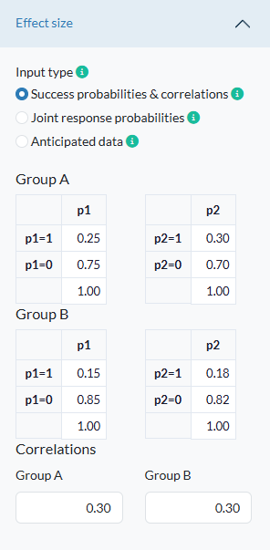
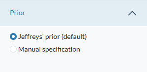
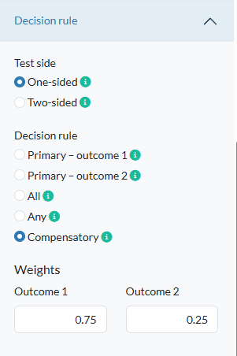
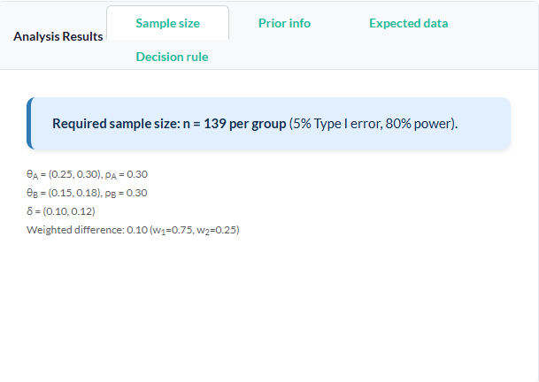
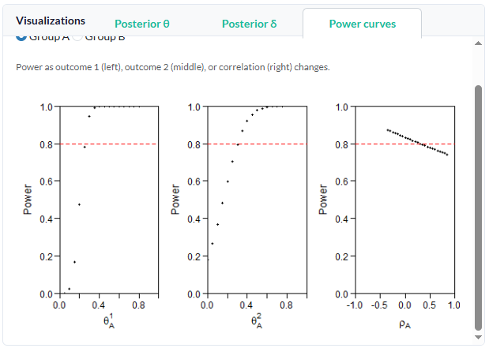
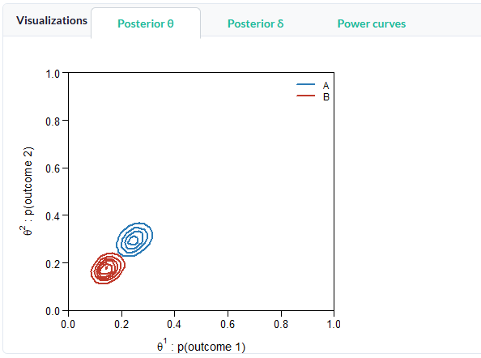
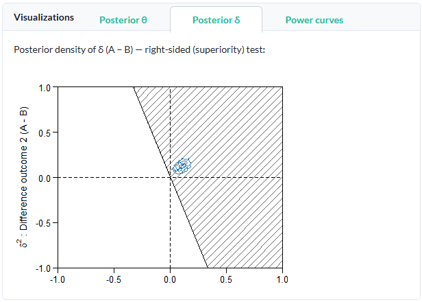

Introduction
This guide provides a practical step-by-step demonstration of the bmco-pwr application. In this walkthrough, we will design a clinical trial comparing a new treatment (Group A) against the standard of care (Group B) using two binary outcomes (e.g., whether a patient experiences symptom reduction within 30 days (0 = no symptom reduction, 1 = symptom reduction) on two different symptoms).
Interface Options
At the top right of the title bar, you will find several global utilities:
- Theme Toggle (🌙 / ☀️): Click to instantly switch between Light Mode and Dark Mode.
- Information & Help (i and ? icons): Click these to launch modals containing the theoretical background of the calculations.
Step-by-Step Scenario Configuration
Step 1: Define the Outcomes
First, expand the Outcomes accordion panel in the sidebar. Since our study evaluates two distinct complications, select the bivariate option Two binary outcomes
Step 2: Input Expected Effect Sizes
Next, expand the Effect size panel. Here, we input our anticipated complication rates using the interactive Handsontable inputs. Because we expect the new treatment to be superior, we will input lower complication rates for Group B.
Select Success probabilities & correlations. Adjust the tables to reflect the following values:
- Group A (Standard):
- Probability of Complication 1: 0.25 (25%)
- Probability of Complication 2: 0.30 (30%)
- Group B (New Treatment):
- Probability of Complication 1: 0.15 (15%)
- Probability of Complication 2: 0.18 (18%)
Since patients susceptible to one complication might be more likely to develop the other, we will introduce a positive correlation of 0.3 in both the rhoA (Group A) and rhoB (Group B) fields.

Step 3: Set the Prior Distribution
Open the Prior panel. Since we do not have robust historical data to build an informative prior, we will stick to the scientific standard:
- Select Jeffreys’ prior (default).
This ensures our prior remains non-informative and allows the newly simulated data to speak for itself.

Step 4: Choose decision rule
Open the Decision rule panel. Specify as follows: * Test side: One-sided (for a right-sided test Group A > Group B). * Decision rule: Compensatory (for a weighted combination). * Weights: 0.75 (Outcome 1) and 0.25 (Outcome 2).
Here, we selected a weighted linear combination of outcomes where outcome one is three times as important in the final decision as outcome 2. For more information on decision rules, you might want to read this blogpost.

Step 5: Establish Statistical Criteria
Expand the Criteria panel to enforce our study’s boundary conditions:
- Alpha (alpha): Set to
0.05(Type-I error rate). - Power (1-beta): Set to
0.80(Aiming for an 80% chance of detecting the true effect). - Max N per group: Set to
500to prevent excessive simulation times if the required sample size turns out to be unfeasibly large.
Step 6: Execute the Calculation
With all parameters locked in, scroll to the bottom of the sidebar and click the prominent blue Compute Sample Size button.
Exploring the Results
Once the server finishes running the Bayesian simulations, the dashboard dynamically updates with the results.
1. The Main Summary (Sample Size Tab)
Under the Analysis Results card, the Sample size tab displays the primary takeaway inside a high-visibility, blue-bordered hero box.

Based on our configuration, the app determines that a sample size of approximately 139 patients per group is required to meet our criteria.
2. The Power Curve Visualization
Switch over to the Visualizations card and click the Power curves tab. The application renders a line plot charting sample size (\(N\)) on the X-axis against statistical power on the Y-axis.
A horizontal dotted line marks the 80% power threshold. You can visually track the power curve as it climbs, intersecting the threshold exactly at the recommended sample size.

3. Posterior Probability Distributions
To dig deeper into the analysis, explore the Posterior theta and Posterior delta tabs. The theta plot shows the posterior distributions of the individual groups. They are clearly separable on the diagonal, implying that - with the computed sample size - a compensatory decision rule would result in a superiority decision in favor of one of the two groups.

This is supported by the delta plot, which visualizes the estimated distribution of the treatment effect (the difference between groups). Because Group B’s probabilities are lower, this sample of the probability distribution sits in the superiority region (the marked area).

Further reading:
- Kavelaars, X., Mulder, J. & Kaptein, M. (2020). Decision-making with multiple correlated binary outcomes in clinical trials. Statistical Methods in Medical Research. https://doi.org/10.1177/0962280220922256
- Kavelaars, X., Mulder, J. & Kaptein, M. (2024). Bayesian Multivariate Logistic Regression for Superiority and Inferiority Decision-Making under Observable Treatment Heterogeneity. Multivariate Behavioral Research. https://doi.org/10.1080/00273171.2024.2337340
Questions? Any references that should be included as well? Found this useful? I’m on social media and happy to discuss!